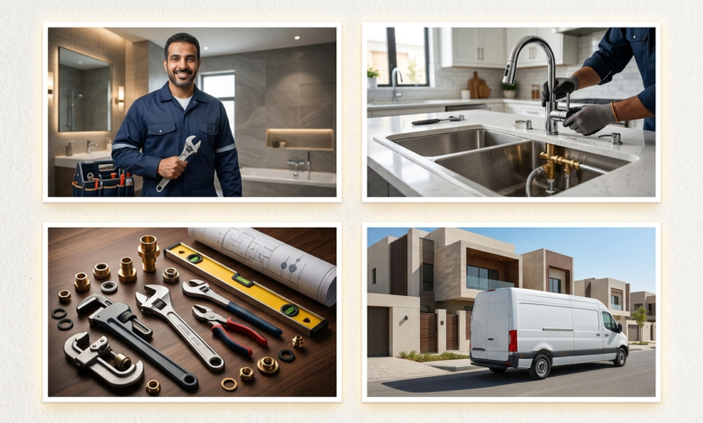

-
تسليك مجاري

فني تسليك مجاري الكويت | تسليك مجاري وبيارات بأحدث الأجهزة
إذا كنت تبحث عن فني تسليك مجاري الكويت يقدم خدمة سريعة واحترافية، فنحن نوفر حلولًا متكاملة لجميع مشاكل انسداد المجاري والصرف الصحي في المنازل والفلل والعمارات والمباني التجارية. نعتمد على أحدث أجهزة تسليك المجاري والكاميرات الحديثة لتحديد سبب الانسداد وإصلاحه دون إحداث أي أضرار في شبكة الصرف. نقدم خدمات تسليك مجاري الكويت، تسليك بيارات، تنظيف البيارات، شفط البيارات، تسليك صرف…
أكمل القراءة » -
فني صحي

تركيب مضخات المياه في الكويت | دليل شامل لاختيار وتركيب وصيانة مضخات المياه باحترافية
تركيب مضخات المياه في الكويت يُعد تركيب مضخات المياه في الكويت من أهم الخدمات التي تحتاج إليها المنازل والفلل والعمارات والمباني التجارية لضمان وصول المياه بضغط ثابت إلى جميع الطوابق. ومع ارتفاع درجات الحرارة وزيادة استهلاك المياه، أصبحت المضخة عنصرًا أساسيًا في أي نظام سباكة حديث. سواء كنت ترغب في تركيب مضخة جديدة أو استبدال مضخة قديمة أو صيانة مضخة…
أكمل القراءة » -
فني صحي
فني صحي بالكويت: دليلك الكامل للاختيار الصحيح
إيش يشمل عمل الفني الصحي المتكامل؟ كثير ناس يحصرون “الفني الصحي” في تسليك المجاري بس، لكن النطاق الفعلي أوسع بكثير ويشمل: تسليك المجاري والبواليع — مطبخ، حمام، وخطوط الصرف الرئيسية كشف تسريبات المياه الظاهرة وتحت البلاط والجدران بدون تكسير عشوائي تركيب وصيانة الأدوات الصحية — مراحيض، أحواض، خلاطات، شاور بوكس تركيب وصيانة السخانات الكهربائية والمركزية تركيب وإصلاح مضخات المياه ومعالجة…
أكمل القراءة » -
فني صحي
فني صحي حولي66115976 – سباكة وتسليك مجاري 24 ساعة
فني صحي حولي – خدمة سباكة فورية 24 ساعة في جميع المناطق المحافظة فني صحي حولي يصلك في أسرع وقت — هذا ما نضمنه لك. سواء واجهت بالتأكيد بالتأكيد في المجاري، ما يمكن أن يكون في الجدار، أو مضخة كل منها، فريقنا جاهز على مدار 24 ساعة يومياً في السالمية والجابرية وبيان والرميثية وأحياء محافظة حولي. محافظة حولي من أكثر…
أكمل القراءة » -
فني صحي
فني صحي الأحمدي – 66115976 خدمة فورية 24 ساعة | سباكة وتسليك مجاري
فني صحي الأحمدي – خدمة فورية 24 ساعة في جميع المناطق المحافظة إذا كنت تبحث عن فني صحي الأحمدي يصلك في أسرع وقت دون توقع، كفاءة في المكان المناسب. خطة البرلمانية لا تختار وقتاً مناسباً — قد تستيقظ فجأة عند الوصول إلى المجاري، أو يمكن أن تتسبب في سقوط رأسك، أو مضخة للمساهمة في أوقات الحر. ولهذا السبب نقدم خدمات…
أكمل القراءة » -
فني صحي
فني صحي بالكويت | 66115976 اتصل بنا خدمات سباكة وتسليك مجاري 24 ساعة
هل تبحث عن فني صحي بالكويت يتمتع بالخبرة والسرعة؟ عندما تتعلق المشكلة بخرير المياه أو انسداد المجاري، فإن الوقت هو العامل الأهم. نحن نوفر لك الحلول الجذرية لجميع مشاكل السباكة والأدوات الصحية بأحدث المعدات في كافة مناطق الكويت. لماذا تحتاج إلى فني صحي محترف؟ السباكة هي العمود الفقري لأي منزل. الاستعانة بفني غير متخصص قد تؤدي إلى تفاقم المشكلة وزيادة…
أكمل القراءة » -
فني صحي

فني صحي بالكويت – 66115976 اتصل بنا خدمات صحية متكاملة بأعلى جودة وأسعار مناسبة
فني صحي بالكويت – خبرة وكفاءة في جميع أعمال السباكة يُعد فني صحي بالكويت من أهم الخدمات التي لا غنى عنها في المنازل، الشركات، والمباني التجارية، حيث تعتمد جودة شبكة المياه والصرف الصحي على مهارة الفني وخبرته. فني صحي محترف يضمن لك حل جميع مشاكل السباكة بسرعة ودقة، مع استخدام أدوات حديثة ومواد عالية الجودة. خدمات فني صحي بالكويت 1.…
أكمل القراءة » -
فني صحي

فني صحي هندي بالكويت 66115976 اتصل بنا – خدمات سباكة احترافية 24 ساعة
خدمات فني صحي هندي بالكويت إذا كنت تبحث عن فني صحي هندي بالكويت يتميز بالخبرة والدقة والسرعة في إنجاز الأعمال، فأنت في المكان الصحيح. الفنيين الهنود مشهورين في الكويت بجودة العمل، الالتزام بالمواعيد، والأسعار المناسبة للجميع. خدمات فني صحي هندي بالكويت 1. تسليك مجاري بدون تكسير يستخدم الفني الهندي أحدث أجهزة تسليك المجاري مثل ماكينة الحبل الكهربائي، وضغط المياه لإزالة…
أكمل القراءة » -
فني صحي

فني صحي السالمية 66115976 اتصل بنا– خدمات سباكة متكاملة على مدار الساعة
إذا كنت من سكان منطقة السالمية وتبحث عن فني صحي محترف يقدم خدمات سريعة وموثوقة، فأنت في المكان الصحيح. فني صحي السالمية هو الحل الأمثل لجميع مشكلات السباكة، من إصلاح التسربات إلى تركيب الأدوات الصحية الحديثة، باستخدام أحدث التقنيات وبأسعار تنافسية. أهمية الاستعانة ب فني صحي في السالمية تُعد السالمية من أكثر المناطق السكنية حيوية في الكويت، وتتميز بكثرة المباني السكنية…
أكمل القراءة » -
فني صحي
دليل اختيار أفضل فني صحي بالكويت لتركيب الأدوات الصحية وصيانة السباكة
تركيب الأدوات الصحية وصيانة أنظمة السباكة يحتاج إلى مهارة وخبرة عالية، خاصة في مناخ مثل الكويت حيث تؤثر الحرارة على الأنابيب والمضخات. إذا كنت تبحث عن أفضل سباك صحي بالكويت، فعليك التأكد من خبرته في تركيب السخانات، صيانة المضخات، وتنظيف المجاري بدون إحداث أي ضرر للبنية التحتية. يقدم لك موقع sbaksehi.xyz قائمة بأفضل الفنيين الصحيين الموثوقين، مع خدمات مضمونة وضمان…
أكمل القراءة »